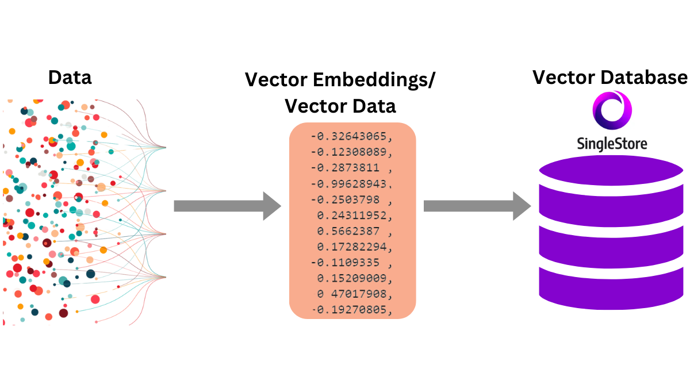

Focus on Vector Databases

- The "Brain" of the Retriever:
A vector database is designed specifically to store and search through billions of vector embeddings at high speed.
It uses algorithms like Approximate Nearest Neighbor (ANN) to find the vectors most similar to a given query vector almost instantly.
- Popular Vector Databases:
Managed Services: Pinecone, Weaviate
Open-Source Libraries/Databases: FAISS (from Meta), ChromaDB, Milvus